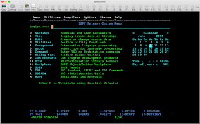
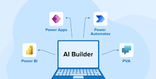

Project 1: Carpet Roll Reassignment
Enhanced an automation process using Mainframe Terminal and REST API services to identify and retrieve discarded carpet rolls. Implemented logic to reassign these rolls based on customer order factors such as color, size, and style, ensuring efficient redistribution to fulfill new customer orders while minimizing waste.
Project 2: Invoice Extraction
Developed a Power Apps solution leveraging Generative AI to extract data from Bill of Lading documents and automatically populate an impact database. Collaborated with SMEs from inception to deployment, defining key requirements and ensuring the automation aligned with business needs. Additionally, designed a manual verification process within Power Apps, allowing users to review and edit extracted data before final database entry.